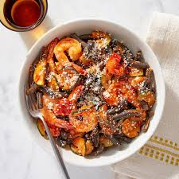

Cuttle Fish
Ingredients
2 medium-sized cuttlefish (cleaned, washed, and sliced) 2 tablespoons olive oil 3 cloves garlic (minced) 1 onion (finely chopped) 1 red bell pepper (sliced) 1 green bell pepper (sliced) 1 tomato (diced) 1 teaspoon paprika 1 teaspoon dried oregano Salt and pepper to taste Fresh parsley (chopped, for garnish) Lemon wedges (for serving)
Instructions
Prepare the Cuttlefish: Ensure the cuttlefish are cleaned thoroughly. Remove the head, cartilage, and innards. Cut the body into rings or slices, or as desired. Sauté Onion and Garlic: Heat 2 tablespoons of olive oil in a large skillet or pan over medium heat. Add the finely chopped onion and minced garlic. Sauté until the onion becomes translucent and the garlic is fragrant. Add Vegetables: Add the sliced red and green bell peppers to the pan. Sauté for a few minutes until they start to soften. Incorporate Cuttlefish: Add the sliced cuttlefish to the skillet with the sautéed vegetables. Cook for about 5-7 minutes or until the cuttlefish turns opaque and tender. Seasoning: Stir in the diced tomato, paprika, dried oregano, salt, and pepper. Mix everything together well, allowing the flavors to combine and the tomatoes to soften. Simmer: Reduce the heat to low and let the cuttlefish mixture simmer for an additional 5-10 minutes. Ensure the cuttlefish is cooked through but not overcooked to maintain its tenderness. Garnish and Serve: Once done, garnish the cuttlefish with freshly chopped parsley. Serve hot with lemon wedges on the side for squeezing over the cuttlefish just before eating.